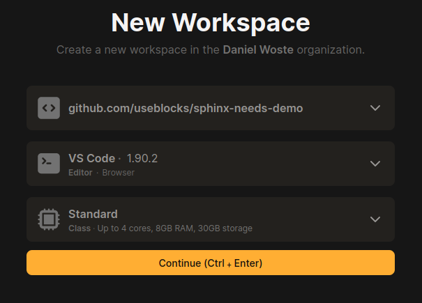
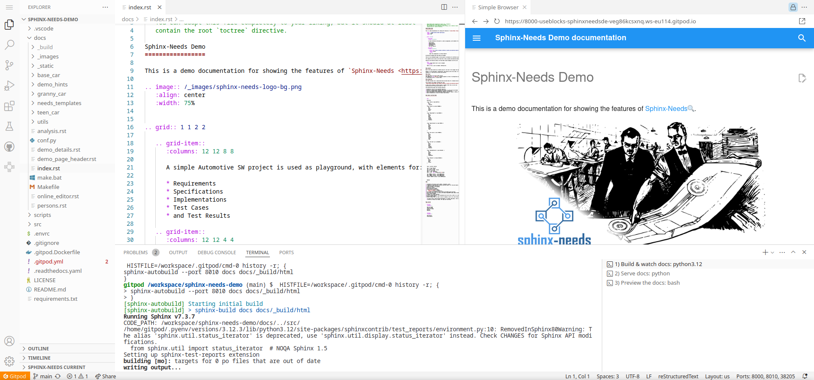
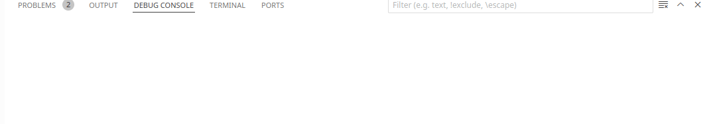
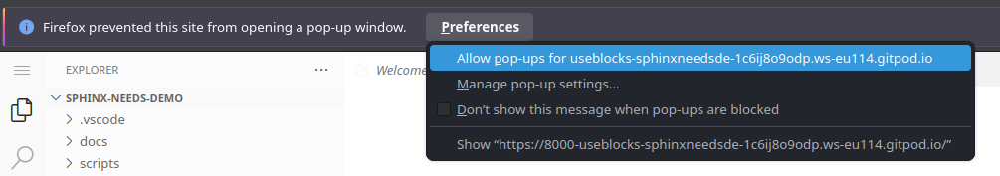
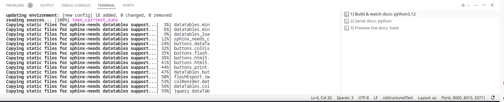
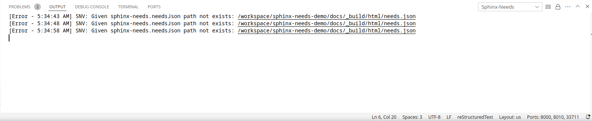
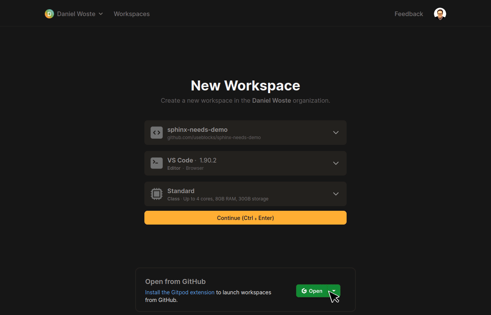

⌨ Online Editor
The source code of the Sphinx-Needs-Demo project can be loaded automatically in a preconfigured VS Code instance on Gitpod, which allows to change data, test some features and see the outcome as a preview in the browser. And this all without any installation or costs on your side.
Start the Online Editor
Hint
It may take up to a minute to start the Online Editor (~30s) and build the docs (~25s). After this, the documentation build is only building updated files, which is normally done in under a second.
Open the following link in your browser: https://gitpod.io/#https://github.com/useblocks/sphinx-needs-demo
You are asked to log in with a Gitpod or Github account.
Select the editor to use. Recommended for this demo is
VS Code Browser.
An instance is started, which
Checks out the Sphinx-Needs-Demo repository.
Installs all needed dependencies for the operating system and the Python environment.
Loads preconfigured VS Code extensions, to support you with the development of the documentation.
Start an initial documentation build.
Shows the documentation build result as a preview in a browser.
After everything is running:
Feel free to edit and save any file under
docs.With each change, the docs get built automatically and you can see the result in the preview, after refreshing the page (normally by pressing
F5).

Watching the built documentation
Your specific build of the Sphinx-Needs-Demo project is publicly available and can be shared with colleagues and other users around the world, as long as your Gitpod instance is running.
You can get the link by opening the "ports" tab and copy the address entry for the port "8000".

Open the docs in an extra browser tab has some advantages compared to the internal VS Code previewer:
The VS Code previewer does not show the folder and files in the URL.
A page reload (
F5) reopens the root page and not the current page.
There is a small button in the upper right corner of the VS Code previewer, to open the shown page in a new browser tab.
Note
The browser's pop-up policy may not allow to open this link. In this case, just allow it.

Ideas for playing around
Create a new file
playground.rstunder/docs/.Set a title in
playground.rst:==========
Add
playgroundto the.. toctree::in the/docs/index.rstfile (end of the file). "Playground" shows up in the left side-menu of the built documentation.Set a
needtableto get an overview of all Sphinx-Needs objects in the documentation:.. ::Add your own requirements:
.. :: ::
Add a specification and link it:
.. :: :: ::
Get the traceability tree of the Lane Keeping Assistance reqirement by using
needflow:.. :: :: :: ::
After taking a look into the generate needflow image, change the
root_directiontoincomingand watch again.
Debug the docs
If anything is not working, here are some locations where to look for the problem
Documentation build problems
In the Terminal app, you will see 3 open terminals on the right side:
Build & watch docs
Serve docs
Preview the docs
1) Build & watch docs is the important one, because there the documentation build output is shown and
therefore also all warnings and errors.

Extension problems
If any VS Code extension is not working as it should, or errors are popping up in the editor itself, take a look into the extension-specific output.
For this, open the Output tab. On the right side is a small select box, which shows all extensions.
Select one and you see its log messages.

Captured Editor run
